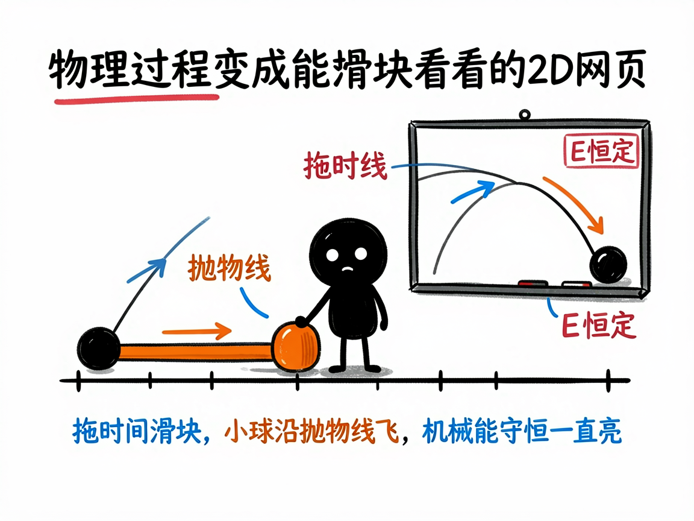
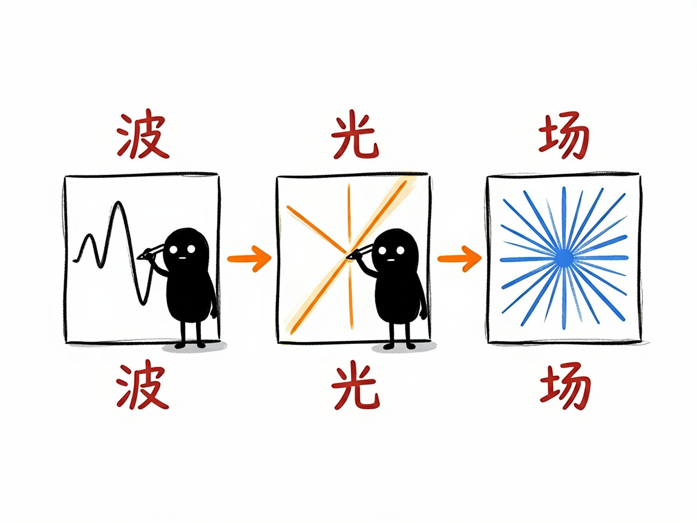

物理题里那些"动起来"的过程，怎么变成能拖滑块看的网页 —— edu-physics 介绍
学物理最怕"只看见公式，看不见过程"。比如抛体运动轨迹为什么是抛物线、简谐振动怎么来回摆、机械能为什么守恒，课本上往往是几个静止的图加一串算式。学生脑子里没画面，公式就成了死记硬背。
edu-physics 就是来解决这件事的：你给它一个适合用平面展示的物理场景（力学、热学、电磁、光学、波……），它帮你在 AI 里产出一个能拖滑块的网页——左边题面加控制台，中间分步推导，右边是一块会动的二维画板，粒子怎么飞、波形怎么传、光怎么折射，全都能实时拖着看。

它到底能做什么
- 把二维平面就够用的物理场景做成三栏交互网页：题面 + 可拖滑块的控制台 + 分步解析 + 动态画板。
- 用一根滑块（时间、角度、速度、温度等）驱动实时重算：位置、速度、能量、动量这些量跟着变，不用手算。
- 画板上能画轨迹、质点、矢量箭头、波形、光线、电场线，还能用画笔随手标注。
- 特别会显示"守恒定律"：比如机械能守恒，网页会一直亮着"E 恒定"的提示，让你直观确认量真的没变。
- 覆盖很广：抛体运动、碰撞、简谐振动、机械波、电场、磁场、折射反射、干涉衍射、气体状态方程、热力学循环等。

怎么用
你不需要记任何命令。在 codex / workbuddy 等 agent 装好 edu-physics 技能后，直接对 AI 说话就行：
场景 1：学斜抛运动 你：帮我把"斜抛运动"做成一个能拖时间滑块看轨迹和能量守恒的网页，初始速度 10 米每秒、仰角 45 度。 AI：AI 生成一个交互网页；你拖动"时间"滑块，画板上的小球沿抛物线飞，速度箭头实时转向，读数显示水平和竖直位移、动能和势能，而"机械能 E"一直保持常数——守恒一下就信了。
场景 2：看波的干涉 你：把两列水波的干涉做成能拖参数看的动画。 AI：AI 生成画板，你拖动频率、振幅等滑块，就能实时看到干涉条纹怎么随参数变化，波形传播清清楚楚。
场景 3：复习机械能守恒 你：我想直观看到机械能守恒，别只给公式。 AI：AI 做一个带"E 恒定"提示的网页，你拖任何参数，画板都实时证明总能量不变。
谁适合用
- 初高中物理老师做课堂演示，把抽象过程演给学生看。
- 学生自学时建立"物理图像"，而不是死背公式。
- 家长陪孩子理解运动、波、光这些难点。
- 科普作者做物理互动内容。
一点说明
这是个给 AI 用的技能（skill），不是普通人直接打开的 App；你把场景交给装好它的 AI，它帮你产出网页。它只负责"二维平面就够"的物理；如果内容涉及三维空间（比如洛伦兹力叉乘方向、原子轨道、晶体结构、刚体旋转），要看它的兄弟技能 edu-physics-3d。物理量是网页里实时算的，你给的数值要合理，AI 也会自己做正确性检查。具体支持哪些场景，以技能实际能力为准。